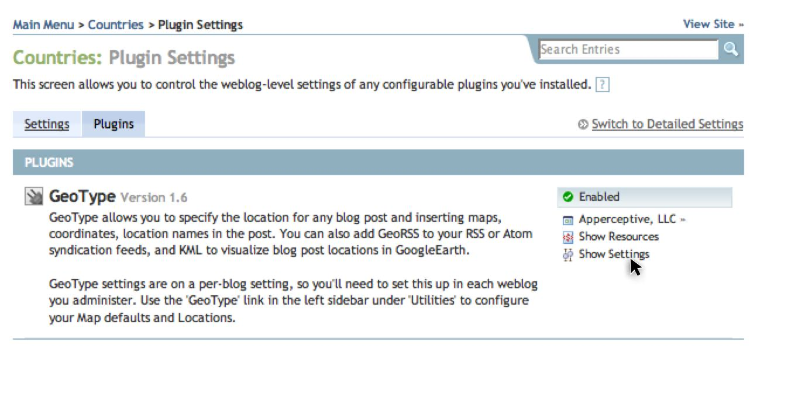

Blog Level Settings: GoogleMaps API Key Generation
These instructions show how to make a GoogleMaps API Key for one particular blog. This GoogleMaps API key is required in addition to the system-wide key when the blog's url builds outside of the domain name generated for the system-wide key, or when a system-wide key does not exist.

Figure 1
Accessing a blog's settings from the Main Menu.

{kind=link}
Figure 2
Accessing the blog-level settings for GeoType.
{kind=link}
Figure 3
Default system-level settings for GeoType.
Click image to enlarge.
Steps for Creating A New Google API Key for One Blog
Viewing Your Blog's Plugin Settings
- While logged in to Movable Type, access the main menu by clicking the 'MAIN MENU' link at the very top of any page.
- Scroll down to the blog you want to work with, and click on 'Settings' in the lower-right area. [ Figure 1 ]
- Click on the 'Plugins' tab on the Settings page.
- Here you'll see an alphabetical listing of some of the Movable Type plugins installed. Scroll down to the GeoType plugin and click on 'Show Settings'. [ Figure 2 ]
- The default settings are shown in Figure 3.
Special Domain Name Consideration
Before you enter a domain name to obtain a GoogleMaps API key, you should note the difference
between the two Google API Key fields in the GeoType settings. The first field
is the default value, which will work for all GoogleMaps used within Movable Type, such
as in the Edit Entry screen or on this Settings page. The second field is to ensure that the
maps display on your blog's site.
It is important to obtain two different keys
if Movable Type is installed on one domain (say, http://mt.mysite.com/) and your blog builds
to another (http://www.mysite.com). It's okay to only get one key if Movable Type resides on
the same domain as your blog (like http://www.mysite.com/mt/ for Movable Type and
http://www.mysite.com/ for the blog).
Obtaining a new GoogleMaps API Key
- To get a new key, click on the 'GoogleMaps API Registration' link from the plugin settings of GeoType. That link is also available here.
- Read through Google's terms of service, check the box to agree, and enter the domain name . See the Special Domain Name Consideration above to get a hint as to which url to use.
- Check the 'Generate API Key' button at the bottom.
- The google page should now display your key in a yellow box. It's a long string of upper and lower-cased letters, numbers, and underscores.
Saving The GoogleMaps API Key into GeoType
- Copy the entire GoogleMaps API Key and paste it into the Google API Key field of your choice into the blog's settings of GeoType in Movable Type.
- Click 'Save Changes'.
- If this is your first time configuring the settings for this blog, a preview GoogleMap should appear at the bottom after saving.
Further Configurations
For all other blog-level configurations, see the Map Settings page.